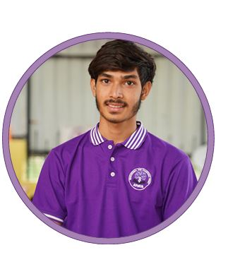
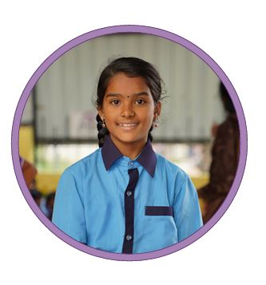
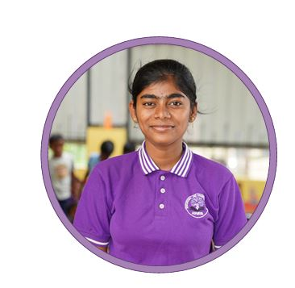
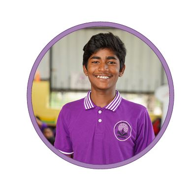
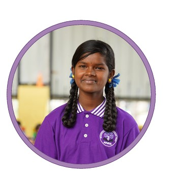

Faces of resilience, learning, and transformed lives at Advaya.
Every child has a unique journey. Here are a few stories of how education and care have paved a new path for our children.

Suman, a young boy from Nepal, studied there until the 4th standard. But when the COVID-19 pandemic struck, everything came to a standstill — especially education. For nearly three years, schools remained closed, and admissions were paused. Like many children during that time, Suman’s learning came to an unexpected halt.
At around 12 years old, Suman moved to India and began living with relatives. In a new country with an unfamiliar system, he was lost and unsure how to continue his education. One day, the team at Advaya introduced him to the center. Suman quietly observed others studying and admitted, "I didn’t even know how to read mobile numbers at that time."
Over time, Advaya helped him find a way back into education. Since a regular school wasn't possible due to his age gap, he was guided to join NIOS (National Institute of Open Schooling). Recently, Suman successfully completed his 10th exam through NIOS.
"The fact that I can write this myself today is only because of Advaya. If Advaya wasn’t there, I might have ended up working in a hotel or doing odd jobs."

Sanjeetha is an 11-year-old girl who is always chirpy, fun-loving, and a ray of sunshine from Nepal. She is also very optimistic and wants to become a teacher when she grows up. She excels in mathematics, English, and Kannada along with traditional subjects she loves to sing, dance, and draw.
Moving from Nepal to Andhra Pradesh, she couldn't avail of any schooling there. It was when she moved to Bengaluru with her parents and 3 siblings that Advaya became her first school. "I used to never go out of my house when I was there," she says, remembering her days before Advaya.
As she navigates her way in this vibrant city, Advaya has helped provide her with the education she had missed out on. "Advaya is my first school and I love coming to school and meeting my friends," she says with a big smile.

Nagashree, a 19-year-old girl from the Hallehalli-Kithaganur slum in Bengaluru, lives with her parents and younger brothers in a small blue tarpaulin house. Her family migrated to the city after repeated crop failures and poor rainfall pushed them into deep debt. "We had no choice but to leave everything behind... it was survival."
City life brought new challenges: poor sanitation, irregular income, and a community where alcoholism was widespread. Girls were often denied education. "In my village, dowry was common," she says. "I knew I wanted a different life." Determined to study, Nagashree topped her 10th standard exams with 86% and received ₹10,000 for her achievement.
"Advaya gave me confidence," she says. "I finally felt heard, seen, and believed in. They helped me see my own worth." Now attending life skill sessions and pursuing 2nd PUC, Nagashree also receives daily nutritious meals.

Gajendra is a bright and determined student studying in 8th Standard. Born in a small village where education was never seen as important, his family survived on farming until irregular rainfall and poor soil made it unsustainable. They moved to Bangalore hoping for a better life, but his parents ended up as daily wage labourers struggling to provide even one proper meal.
When he was introduced to Advaya in 3rd Standard, he struggled with reading and writing basic English words. With the help of his teachers, spoken English classes, and continuous encouragement, Gajendra's skills gradually improved. Today, he can read fluently, write clearly, and speak confidently in English.
Gajendra proudly assists the founder while preparing breakfast for all the children. "I am proud to be part of the change. I want to break these barriers and prove that girls can lead, succeed, and take charge of their own lives," says Gajendra dreaming of challenging harmful traditions.

Khushbu, a 6th standard student at Government School, Kithaganur, comes from a village in Bihar where girls' education is often ignored. She witnessed harmful traditions that are still followed, like early child marriage and girls being kept away from schools. "I never liked that environment. It made me feel scared and helpless," Khushbu shares.
Due to financial struggles, her family moved to Bangalore, hoping for a better future. Her life changed when she joined Advaya, a learning center where children receive academic support along with life skills. Once shy and quiet, Khushbu now speaks confidently, participates in activities, and has learned about discipline, cleanliness, and self-care.
"I strongly believe girls' independence is very important. I want to prove that girls can do anything when given the right support. I dream of becoming a role model — someone who proves that, with the right support, girls can rise, grow, and lead."
Your support can help more children like Suman and Nagashree rewrite their futures.